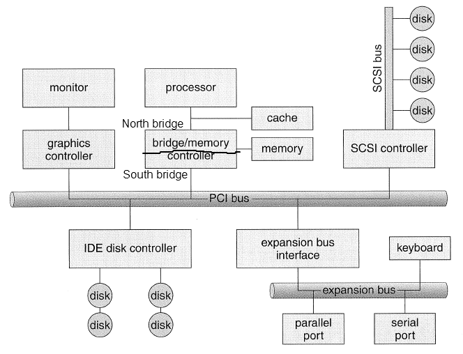

First: talk about Assignment 6.
Typical computer organization (Silberschatz Fig. 13.1)

I/O devices are connected to the processor(s) via a bus, typically a
PCI bus.
Each device connected to the bus has a set of hardware
registers. By writing values to and reading values from the
hardware registers, the host CPU communicates with the device.
Device registers can be accessed via special hardware instructions,
or by ordinary memory access instructions. An x86 PC typically
uses both approaches. Most device registers are accessed using
the I/O instructions (inb, outb, etc.), while some devices are memory-mapped. Video cards
generally use a large chunk of memory to buffer the displayed image;
this memory is typically accessed using memory-mapped I/O.
Many architectures do not have special instructions for accessing
I/O device registers and use memory-mapped I/O for all device-level
access. E.g., PowerPC Macs.
As we have seen, some I/O takes a long time to complete. E.g.,
disk reads. Some period of time may elapse between the time an
I/O request is made and when the request is complete.
There are three general approaches to waiting for I/O:
Busy-waiting.
The kernel just spins in a loop. This is obviously a big waste of
time, since the time waiting for the I/O request completes is not benig
used for anything useful.
Polled.
The kernel periodically checks the device to see whether or not the
request has completed. Generally, a timer is used to regulate the
polling interval. Between checks, other threads can be run.
Interrupt-Driven.
The hardware device raises a hardware interrupt when the request is
complete.
In general, interrupt-driven I/O will result in lower request
latency, since the kernel is notified immediately upon completion of
the request. However, there is nothing inherently bad about
polling.
Interesting fact: Recent versions of
Linux automatically switch from interrupt-driven to pollen I/O for
network device drivers when the rate of interrupts being received
becomes too high. E.g., if each incoming network packet causes an
interrupt, the kernel spends too much CPU time dealing with the
interrupts and not enough dealing with the packet data. Each time
the kernel polls, it can process a number of packets, resulting in less
kernel processing overhead.
Hardware interrupts are managed by a device called the interrupt controller. This
may be a separate chip, or (more likely) is integrated into the
CPU. Its job is to handle interrupt requests (IRQs) from hardware
devices and notify the host CPU.
What happens when a hardware device signals an IRQ:
Something happens that the device wants
to notify the CPU about. E.g., completion of a disk read.
The device asserts its interrupt request
line.
The interrupt controller waits until the
IRQ is unmasked.
Once the IRQ is unmasked, the interrupt
controller signals the CPU and masks the IRQ.
The the CPU reaches a state where
interrupts are enabled, a dispatch to the appropriate interrupt handler
occurs.
The interrupt handler communicates with
the device to find out what happened. Often, if substantial work
needs to be done to complete an I/O request, the work is deferred to a bottom-half function which runs at
a later time.
When the interrupt handler is done, it
sends an end-of-interrupt
(EOI) command to the interrupt controller. This causes the
interrupt controller to unmask the IRQ.
The ability to mask and unmask IRQs is necessary to prevent an
interrupt handler from being interrupted by another occurrence of the
same interrupt. In theory, the CPU could avoid this problem by
leaving interrupts disabled while a handler for a hardware interrupt is
running. In otherw ords, hardware interrupts for a particular IRQ
are serialized, meaning they occur one after another, and two cannot be
happening at the same time. However, some OS kernels use the
concept of interrupt levels
to allow higher-priority IRQs to interrupt lower-priority IRQs.
Operating systems using this approach will run interrupt handlers with
interrupts enabled.